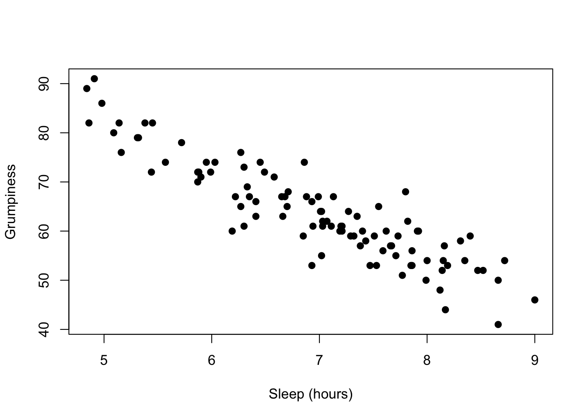

Chapter 9 Statistics Reference
9.1 One-Sample z-Test
9.1.1 Definition
The one-sample z-test tests the null hypothesis that a mean is equivalent to the mean of a known population.
9.1.2 Test Statistic
The test statistic is \(z\), which measures the distance between two means. In this case, one mean is from our sample and the other mean is a known constant. The sampling distribution of \(z\) is the normal distribution with a standard deviation defined by the formula for standard error (\(\sigma_{\bar{X}}\)).
\(z = \frac{\bar{X}-\mu}{\sigma_{\bar{X}}} = \frac{\bar{X}-\mu_{hyp}}{\frac{\sigma}{\sqrt{N}}}\)
Figure 9.1: The null hypothesis distribution of \(z\)
9.1.3 Assumptions & Required Data
- 1 variable measured using a quantitative, continuous scale
- The variable was measured for a sample that was taken randomly, with replacement, from a population
- The normality assumption, meaning at least one of these:
- \(N \ge 30\)
- The variable is normally distributed in the population
- The population mean, \(\mu\), is known.
- The population standard deviation, \(\sigma\), is known
9.1.4 When to use it
Use a \(z\)-test when you are comparing a single sample mean to a known population parameter and can meet the assumptions.
If the population standard deviation is unknown, or if the normality assumption cannot be met, consider a \(t\)-test.
9.1.5 Example
Imagine a high school has a graduation test with \(M = .80\) with a standard deviation (\(\sigma\)) of \(\sigma = .10\). A random sample of \(N = 35\) students at the high school participate in an after-school program aimed at increasing performance on the graduation test.
9.1.5.1 Data
The data are test scores from 35 students.
## [1] 1.00 0.77 0.66 0.65 1.05 0.97 0.90 0.71 0.88 1.00 0.75 0.67 0.68 0.88
## [15] 0.92 0.87 0.94 0.78 0.98 0.93 0.93 1.00 0.97 0.95 0.85 1.07 0.87 0.89
## [29] 0.89 0.89 1.06 1.02 0.69 0.93 0.96## [1] 0.8845714The students in the program took the test and performed higher than the population average (\(M=\)print(mean(sample))). Is there evidence that the after school program is effective?
9.1.5.2 Hypotheses
Because researchers are interested in detecting higher performance on the test, a one-tailed test is used to increase statistical power. If, instead, researchers wanted to see if the sample had higher or lower performance, a two-tailed test should be used.
$H_0=\mu\le.80$
$H_a=\mu\gt.80$9.1.5.3 Analysis
Set the alpha level. By convention, an alpha level of \(\alpha = .05\) will be used.
Assume the null hypothesis is true. Assuming the null hypothesis is true means that we need to determine the probability of obtaining a sample mean this distance from the population mean. We will determine this using the sampling distribution of the null hypothesis for \(z\) (the normal distribution).
Unlike later statistical tests, R does not provide a built-in \(z\)-test. This is actually a feature, as it lets us demonstrate the steps in more detail.
The most challenging part is the function pnorm(), which gives the area to the left of a score on the a standard normal distribution. By using the argument `lower.tail = FALSE, the function will give the area to the right of the score.
mu <- .80
sigma <- .10
n <- length(data)
z <- (mean(sample) - mu) / (sigma / sqrt(n))
z## [1] 0.8457143p_value <- pnorm(z, mean = 0, sd = 1, lower.tail = FALSE) # gives area to the right of the score, which is the p-value
p_value## [1] 0.1988561To visualize this result, we can graph the location of the test statistic in the sampling distribution, shading everything beyond the test statistic in one tail:
library(ggplot2)
ggplot(NULL, aes(c(-4,4))) +
geom_area(stat = "function", fun = dnorm, xlim = c(-4, z), alpha = 0.5,fill=alpha("grey",0)) +
geom_area(stat = "function", fun = dnorm, fill="blue", xlim = c(z, 4), alpha = 0.7)The shaded area is well over 5 percent, showing visually that \(p>\alpha\).
9.1.5.4 Decision
Because \(p>{\alpha}\), the null hypothesis is retained and the results are inconclusive. These data do not provide evidence of effectiveness of the program.
9.1.5.5 Variations
This was a one-tailed test on the right side of the distribution. The use of
rnorm()would need to be adapted if the one-tailed test was on the left side of the distribution (to detect if scores were lower than the population). Simply omitlower.tail = FALSEto havernorm()calculate from the left side (lower tail).In a two-tailed test, the shading would need to be repeated on the left side, and the shaded area on both sides would need to be added together. You can save a step by knowing that each tail is always the same area. To convert this one-tailed p-value into a two-tailed p-value, you would need to double it, giving you a two-tailed p-value of
{r, echo=FALSE} print(p_value*2). When doing a two-tailed test, check to make sure you are calculating in the correct tail; if your two-tailed test had a sample mean lower than the population mean, you would want to shade/calculate to the left.If \(p < \alpha\), you would have rejected the null hypothesis and concluded that there was a difference between your sample mean and the population.
9.2 Correlation
9.2.1 Definition
A correlation analysis measures the strength and direction of a relationship between two variables. The hypothesis test for a correlation tests the null hypothesis that there is no linear relationship between two variables. This is also called a bivariate correlation (because it involves two variables) and the Pearson correlation coefficient.
9.2.2 Test Statistic
The test statistic is actually a \(t\) distribution calculated from the observed value of \(r\), which measures the strength and direction of the relationship. The statistic \(r\) has values \(-1\le{r}\le 1\), with -1 indicating a perfect negative relationship and +1 indicating a perfect positive relationship. \(r = 0\) indicates no relationship between the variables and is rarely observed to be exactly 0 in practice. To conduct a hypothesis test, \(r\) is converted to a value of \(t\) because this function of the sampling distribution of \(r\) follows a \(t\)-distribution:
\(t = r\sqrt{\frac{n-2}{1-r^2}}\)
This function can be reversed as \(r=\frac{t}{\sqrt{n-2+t^2}}\)
Figure 9.2: The null hypothesis distribution of \(t\) with values of df between 2 and 10. Notice how the curve is starting to converge at the higher values of df.
The \(t\) distribution is actually a family of distributions defined by degrees of freedom. Degrees of freedom is a concept that can be interpreted multiple ways. For now, it is sufficient to say that it is based on sample size. The value of degrees of freedom grows by 1 with each additional unit increased in the sample. In other words, the specific sampling distribution used in the hypothesis test depends on the sample size (and degrees of freedom).
9.2.3 Assumptions & Required Data
For more detail, see 8.12.
- 2 quantitative variables (interval or ratio), or one quantitative variable with a dichotomous (two possible values) variable. The later version is called a point-biserial correlation and is mathematically the same as the Pearson correlation coefficient. Note that this procedure is not appropriate for ordinal variables, and Spearman’s rank correlation coefficient should be used instead.
- Normality, meaning normal distribution of residuals.
- Linearity
- Homogeneity of variance (also called homoscedasiticty and equality of variance)
- No outliers
9.2.4 When to use it
Use a correlation when you want to detect a linear relationship between two variables.
9.2.5 Example
Navarro (2018) wanted to see if there was a relationship between hours slept in a night and their rating of grumpiness the next day.
9.2.5.1 Data
The data are two variables, one indicating sleep and the other indicating grumpiness. Data were collected for 100 nights.
## dan.sleep baby.sleep dan.grump day
## 1 7.59 10.18 56 1
## 2 7.91 11.66 60 2
## 3 5.14 7.92 82 3
## 4 7.71 9.61 55 4
## 5 6.68 9.75 67 5
## 6 5.99 5.04 72 6
## 7 8.19 10.45 53 7
## 8 7.19 8.27 60 8
## 9 7.40 6.06 60 9
## 10 6.58 7.09 71 10
## 11 6.49 11.68 72 11
## 12 6.27 6.13 65 12
## 13 5.95 7.83 74 13
## 14 6.65 5.60 67 14
## 15 6.41 6.03 66 15
## 16 6.33 8.19 69 16
## 17 6.30 6.38 73 17
## 18 8.47 11.11 52 18
## 19 7.21 5.51 61 19
## 20 7.53 6.69 53 20
## 21 8.00 9.74 54 21
## 22 7.35 9.02 63 22
## 23 6.86 6.44 74 23
## 24 7.86 9.43 56 24
## 25 4.86 3.46 82 25
## 26 5.87 6.32 72 26
## 27 8.40 7.95 59 27
## 28 6.93 7.69 66 28
## 29 7.21 7.45 60 29
## 30 6.99 7.56 67 30
## 31 8.17 7.95 44 31
## 32 7.85 11.61 53 32
## 33 6.27 4.70 76 33
## 34 8.66 8.52 41 34
## 35 4.98 4.70 86 35
## 36 6.19 8.32 60 36
## 37 6.41 9.38 63 37
## 38 4.84 4.18 89 38
## 39 7.03 5.98 61 39
## 40 7.66 9.29 57 40
## 41 7.51 6.01 59 41
## 42 7.92 10.54 60 42
## 43 8.12 11.78 48 43
## 44 7.47 11.60 53 44
## 45 7.99 11.35 50 45
## 46 5.44 5.63 72 46
## 47 8.16 6.98 57 47
## 48 7.62 6.03 60 48
## 49 5.87 4.66 70 49
## 50 9.00 9.81 46 50
## 51 8.31 12.07 58 51
## 52 6.71 7.57 68 52
## 53 7.43 11.35 58 53
## 54 5.90 5.47 71 54
## 55 8.52 8.29 52 55
## 56 6.03 6.80 74 56
## 57 7.29 10.63 59 57
## 58 7.32 8.59 59 58
## 59 6.88 7.82 67 59
## 60 6.22 7.18 67 60
## 61 6.94 8.29 61 61
## 62 7.01 11.08 64 62
## 63 7.20 6.46 61 63
## 64 6.30 3.25 61 64
## 65 8.72 9.74 54 65
## 66 7.82 8.75 62 66
## 67 8.14 11.75 52 67
## 68 7.27 9.31 64 68
## 69 6.70 7.73 65 69
## 70 7.55 8.68 65 70
## 71 7.38 9.77 57 71
## 72 7.73 9.71 59 72
## 73 5.32 4.17 79 73
## 74 7.86 10.18 53 74
## 75 6.35 9.28 67 75
## 76 7.11 7.23 61 76
## 77 5.45 6.38 82 77
## 78 7.80 9.20 68 78
## 79 7.13 8.20 67 79
## 80 8.35 10.16 54 80
## 81 6.93 8.95 53 81
## 82 7.07 6.80 62 82
## 83 8.66 8.34 50 83
## 84 5.09 6.25 80 84
## 85 4.91 6.75 91 85
## 86 7.03 9.09 62 86
## 87 7.02 10.42 64 87
## 88 7.67 8.89 57 88
## 89 8.15 9.43 54 89
## 90 5.88 6.79 72 90
## 91 5.72 6.91 78 91
## 92 6.66 6.05 63 92
## 93 6.85 6.32 59 93
## 94 5.57 8.62 74 94
## 95 5.16 7.84 76 95
## 96 5.31 5.89 79 96
## 97 7.77 9.77 51 97
## 98 5.38 6.97 82 98
## 99 7.02 6.56 55 99
## 100 6.45 7.93 74 1009.2.5.2 Hypotheses
Given their often-exploratory use, correlations are typically conducted as two-tailed tests. However, a one-tailed correlation could be conducted if researchers predict a direction for the effect.
Hypotheses are always written with population parameters (since we are making hypotheses about truth in the population, not what we have observed in our sample). The population parameter corresponding to the test statistic \(r\) is \(\rho\) (rho). The null is that there is no relationship. The alternative hypothesis is that there is a relationship.
\(H_0=\rho=0\)
\(H_a=\rho\ne0\)
9.2.5.3 Analysis
Set the alpha level. By convention, an alpha level of \(\alpha = .05\) will be used.
Assume the null hypothesis is true. Assuming the null hypothesis is true means that we need to determine the probability of obtaining an effect size (\(r\)) this strong at our sample size through random sampling from a population with effect size \(\rho=0\). We will determine this using the sampling distribution of the null hypothesis for \(t\).
There are several ways to generate correlations in R:
cor()will output just the correlation coefficientcor.test()will perform NHST and give a p-value
cor( x = parenthood$dan.sleep, y = parenthood$dan.grump )## [1] -0.903384cor.test(x = parenthood$dan.sleep, y = parenthood$dan.grump)##
## Pearson's product-moment correlation
##
## data: parenthood$dan.sleep and parenthood$dan.grump
## t = -20.854, df = 98, p-value < 2.2e-16
## alternative hypothesis: true correlation is not equal to 0
## 95 percent confidence interval:
## -0.9340614 -0.8594714
## sample estimates:
## cor
## -0.903384To visualize this result, we can graph a scatterplot, with observed values of one variable plotted against the observed value of the second variable:
oneCorPlot <- function(x,y,...) {
plot(x,y,pch=19,col=("black"),...)
}
oneCorPlot( parenthood$dan.sleep, parenthood$dan.grump,
xlab="Sleep (hours)", ylab="Grumpiness"
)
The magnitude of r (it’s value) indicates the strength of the relationship. The closer the value of \(r\) to \(\pm1\), the more closely the points hug a straight line. The line will have a positive slope if the relationship is positive and a negative slope if the relationship is negative.
9.2.5.4 Decision
Because \(p<{\alpha}\), the null hypothesis is rejected and we conclude that there is a relationship between sleep and grumpiness. Further, because the value of \(r\) is negative, the relationship between grumpiness and sleep is that higher amounts of sleep are associated with lower levels of grumpiness.
9.2.5.5 Variations
- If data are ordinal, Spearman’s rank order correlation can be calculated by adding the argument method = “separman” using the following syntax:
cor( x, y, method = "spearman")
In a two-tailed test, the shading would need to be repeated on the left side, and the shaded area on both sides would need to be added together. You can save a step by knowing that each tail is always the same area. To convert this one-tailed p-value into a two-tailed p-value, you would need to double it, giving you a two-tailed p-value of
{r, echo=FALSE} print(p_value*2). When doing a two-tailed test, check to make sure you are calculating in the correct tail; if your two-tailed test had a sample mean lower than the population mean, you would want to shade/calculate to the left.If \(p \ge \alpha\), you would have retained the null hypothesis and made no conclusion.
You can calculate a correlation matrix that shows all possible bivariate correlations from a dataframe. Simply include the entire dataframe as the argument instead of two variables, like this:
cor( x = parenthood)## dan.sleep baby.sleep dan.grump day
## dan.sleep 1.00000000 0.62794934 -0.90338404 -0.09840768
## baby.sleep 0.62794934 1.00000000 -0.56596373 -0.01043394
## dan.grump -0.90338404 -0.56596373 1.00000000 0.07647926
## day -0.09840768 -0.01043394 0.07647926 1.00000000When using a correlation matrix, p-values are not interpretable because the probability of a type I error on one or more of these correlations is higher than .05 (because the alpha level of .05 is used on each one, and many tests are being conducted).
9.3 Linear Regression
9.3.1 Definition
Linear regression creates a linear model that can be used to predict an outcome variable from one or more predictor variables. The hypothesis test for a linear regression occurs in two stages. The first stage, called the omnibus test, is a hypothesis test of the entire model. If this test is significant, researchers can conclude that the collection of variables significantly predicts the outcome. Assuming significance, the second stage follows in which each predictor variable is tested with a against the null hypothesis that its regression coefficient is zero.
9.3.2 Test Statistic
The omnibus test uses an \(F\)-test to test the null hypothesis that there is no linear relationship between the outcome variable and the linear combination of the predictor variables. Or, that the variance explained by the predictor variables is no more than the variance explained by the mean. Tests of each coefficient use \(t\)-tests. The statistics \(F\) and \(t\) are related such that \(t=\sqrt{F}\) and \(F=t^2\).
\[ F = \frac{\mbox{MS}_{model}}{\mbox{MS}_{residual}} \] \[ t = \frac{\hat{b}}{\mbox{SE}({\hat{b})}} \]
As with \(t\), \(F\) is a family of distributions defined around two degrees of freedom.
Figure 9.3: Graph of the sampling distribution of F used under Creative Commons License from Hartmann, K., Krois, J., Waske, B. (2018): E-Learning Project SOGA: Statistics and Geospatial Data Analysis. Department of Earth Sciences, Freie Universitaet Berlin.
9.3.3 Assumptions & Required Data
For more detail, see 8.12.
- A single quantitative outcome variable (interval or ratio), and one or more quantitative or dichotomous (two possible values) variables. Note that this procedure is not appropriate for ordinal variables.
- Normality of residuals
- Linearity
- Homogeneity of variance (also called homoscedasiticty and equality of variance)
- Uncorrelated predictors
- Residuals that are independent of each other
- No outliers
9.3.4 When to use it
Use a regression when you want to formulate and test a linear model, including mediating and moderating variables. Regression can also be used to run ANOVAs.
9.3.5 Example
The same data from the correlation guide will be used. Navarro (2018) wanted to see if hours slept in a night and hours the baby slept in a night could predict their rating of grumpiness the next day.
9.3.5.1 Data
The data are three variables, one indicating hours slept (predictor 1), one indicating the hours slept by the baby (predictor 2), and the other (the outcome) indicating grumpiness. Data were collected for 100 nights.
## dan.sleep baby.sleep dan.grump day
## 1 7.59 10.18 56 1
## 2 7.91 11.66 60 2
## 3 5.14 7.92 82 3
## 4 7.71 9.61 55 4
## 5 6.68 9.75 67 5
## 6 5.99 5.04 72 6
## 7 8.19 10.45 53 7
## 8 7.19 8.27 60 8
## 9 7.40 6.06 60 9
## 10 6.58 7.09 71 10
## 11 6.49 11.68 72 11
## 12 6.27 6.13 65 12
## 13 5.95 7.83 74 13
## 14 6.65 5.60 67 14
## 15 6.41 6.03 66 15
## 16 6.33 8.19 69 16
## 17 6.30 6.38 73 17
## 18 8.47 11.11 52 18
## 19 7.21 5.51 61 19
## 20 7.53 6.69 53 20
## 21 8.00 9.74 54 21
## 22 7.35 9.02 63 22
## 23 6.86 6.44 74 23
## 24 7.86 9.43 56 24
## 25 4.86 3.46 82 25
## 26 5.87 6.32 72 26
## 27 8.40 7.95 59 27
## 28 6.93 7.69 66 28
## 29 7.21 7.45 60 29
## 30 6.99 7.56 67 30
## 31 8.17 7.95 44 31
## 32 7.85 11.61 53 32
## 33 6.27 4.70 76 33
## 34 8.66 8.52 41 34
## 35 4.98 4.70 86 35
## 36 6.19 8.32 60 36
## 37 6.41 9.38 63 37
## 38 4.84 4.18 89 38
## 39 7.03 5.98 61 39
## 40 7.66 9.29 57 40
## 41 7.51 6.01 59 41
## 42 7.92 10.54 60 42
## 43 8.12 11.78 48 43
## 44 7.47 11.60 53 44
## 45 7.99 11.35 50 45
## 46 5.44 5.63 72 46
## 47 8.16 6.98 57 47
## 48 7.62 6.03 60 48
## 49 5.87 4.66 70 49
## 50 9.00 9.81 46 50
## 51 8.31 12.07 58 51
## 52 6.71 7.57 68 52
## 53 7.43 11.35 58 53
## 54 5.90 5.47 71 54
## 55 8.52 8.29 52 55
## 56 6.03 6.80 74 56
## 57 7.29 10.63 59 57
## 58 7.32 8.59 59 58
## 59 6.88 7.82 67 59
## 60 6.22 7.18 67 60
## 61 6.94 8.29 61 61
## 62 7.01 11.08 64 62
## 63 7.20 6.46 61 63
## 64 6.30 3.25 61 64
## 65 8.72 9.74 54 65
## 66 7.82 8.75 62 66
## 67 8.14 11.75 52 67
## 68 7.27 9.31 64 68
## 69 6.70 7.73 65 69
## 70 7.55 8.68 65 70
## 71 7.38 9.77 57 71
## 72 7.73 9.71 59 72
## 73 5.32 4.17 79 73
## 74 7.86 10.18 53 74
## 75 6.35 9.28 67 75
## 76 7.11 7.23 61 76
## 77 5.45 6.38 82 77
## 78 7.80 9.20 68 78
## 79 7.13 8.20 67 79
## 80 8.35 10.16 54 80
## 81 6.93 8.95 53 81
## 82 7.07 6.80 62 82
## 83 8.66 8.34 50 83
## 84 5.09 6.25 80 84
## 85 4.91 6.75 91 85
## 86 7.03 9.09 62 86
## 87 7.02 10.42 64 87
## 88 7.67 8.89 57 88
## 89 8.15 9.43 54 89
## 90 5.88 6.79 72 90
## 91 5.72 6.91 78 91
## 92 6.66 6.05 63 92
## 93 6.85 6.32 59 93
## 94 5.57 8.62 74 94
## 95 5.16 7.84 76 95
## 96 5.31 5.89 79 96
## 97 7.77 9.77 51 97
## 98 5.38 6.97 82 98
## 99 7.02 6.56 55 99
## 100 6.45 7.93 74 1009.3.5.2 Hypotheses
All \(F\)-tests have two-tailed, directionless hypotheses. Because the omnibus test uses the \(F\)-distribution, all regression omnibus tests are two-tailed.
The null is that the mean (which is the y-intercept, or \(b_0\)) predicts the outcome variable (\(Y_i\)) as well as the model. The alternative hypothesis is that the predictors add explained variance.
\[ H_0: Y_i = b_0 + \epsilon_i \] \[ H_a: Y_i = \left( \sum_{k=1}^K b_{k} X_{ik} \right) + b_0 + \epsilon_i \]
9.3.5.3 Analysis
Set the alpha level. By convention, an alpha level of \(\alpha = .05\) will be used.
Assume the null hypothesis is true. Assuming the null hypothesis is true means that we need to determine the probability of obtaining an effect size (in this case, the predictive power of our model over the null model with only the mean, measured using \(R^2\)) this strong at our sample size through random sampling from a population with no effect (a null model). We will determine this using an analysis of variance using the sampling distribution of the null hypothesis for \(F\).
regression.2 <- lm( formula = dan.grump ~ dan.sleep + baby.sleep,
data = parenthood )
summary(regression.2)##
## Call:
## lm(formula = dan.grump ~ dan.sleep + baby.sleep, data = parenthood)
##
## Residuals:
## Min 1Q Median 3Q Max
## -11.0345 -2.2198 -0.4016 2.6775 11.7496
##
## Coefficients:
## Estimate Std. Error t value Pr(>|t|)
## (Intercept) 125.96557 3.04095 41.423 <2e-16 ***
## dan.sleep -8.95025 0.55346 -16.172 <2e-16 ***
## baby.sleep 0.01052 0.27106 0.039 0.969
## ---
## Signif. codes: 0 '***' 0.001 '**' 0.01 '*' 0.05 '.' 0.1 ' ' 1
##
## Residual standard error: 4.354 on 97 degrees of freedom
## Multiple R-squared: 0.8161, Adjusted R-squared: 0.8123
## F-statistic: 215.2 on 2 and 97 DF, p-value: < 2.2e-16confint(regression.2, level = 0.95)## 2.5 % 97.5 %
## (Intercept) 119.930125 132.0010063
## dan.sleep -10.048710 -7.8517895
## baby.sleep -0.527462 0.5485109The omnibus test can be found in the last row as F-statistic. Here, the omnibus test was significant, \(F\)(2, 97) = 215.2, \(p\) < .001, \(R^2=0.82\), suggesting that the model significantly predicts grumpiness.
While a multiple regression with more than one predictor cannot be visualized easily, you could generate added variable plots for each predictor.
9.3.5.4 Decision
9.3.5.4.1 Omnibus Test
Because \(p<{\alpha}\), the null hypothesis is rejected and we conclude that grumpiness can be predicted by the linear combination of hours slept and hours the baby slept. However, we do not know which variable(s) significantly explain variance. Because we have a significant omnibus test, we are now justified in testing the coefficients.
9.3.5.4.2 Test of Coefficients
\(t\)-tests are conducted for each coefficient in the summary() table. The hours slept coefficient was a significant predictor, \(t\)(97) = -16.17, \(p\) < .001, 95% CI [-10.05, -7.85]. As hours slept increased, grumpiness decreased. The hours the baby slept was not a significant predictor, \(t\)(97) = -16.17, \(p\) < .001, 95% CI [-0.53, 0.55].
Note that the degrees of freedom are the residual degrees of freedom (the second number). \(F\) tests are always reported with the model degrees of freedom first (2) and the residual degrees of freedom second (97).
9.3.5.5 Variations
This guide will be updated to add assumption checking and diagnostics procedures for regression.